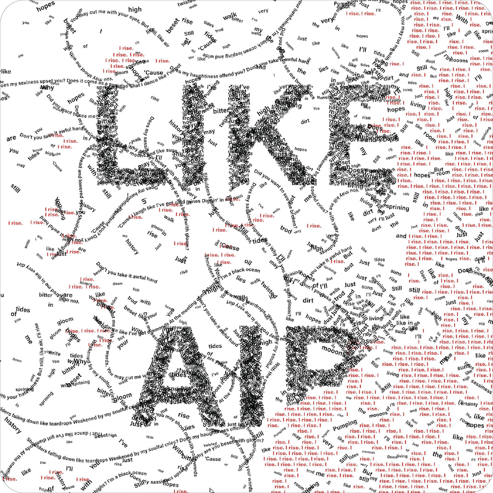
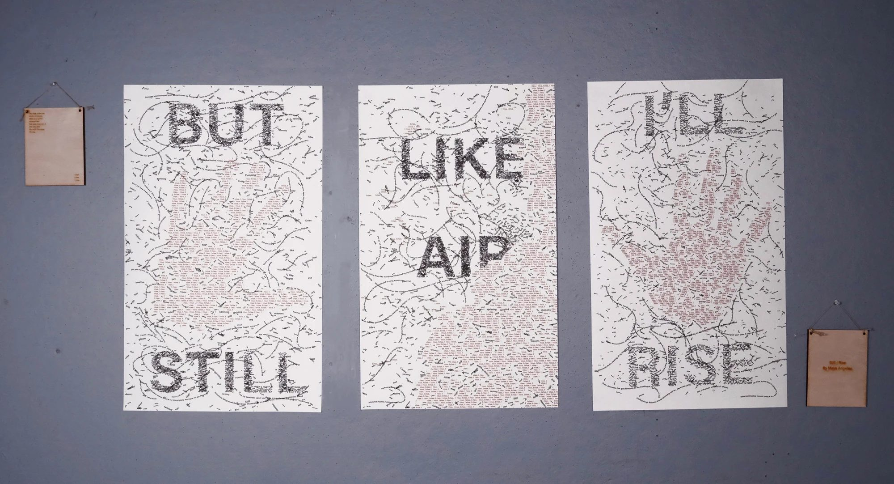
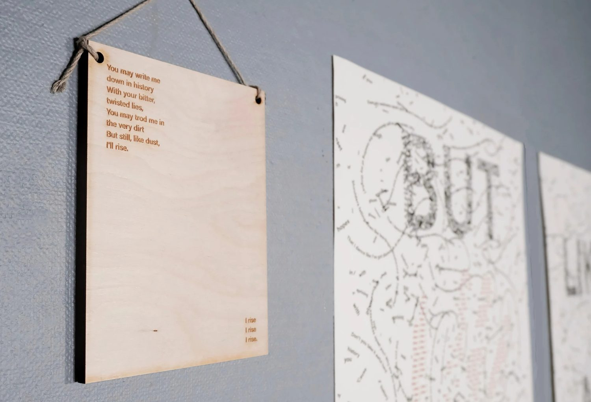
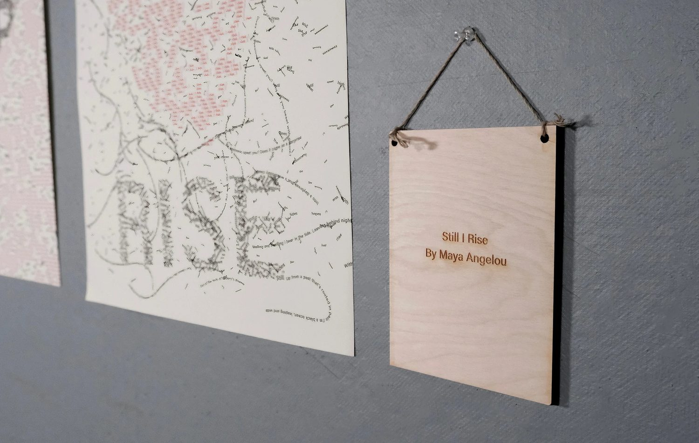
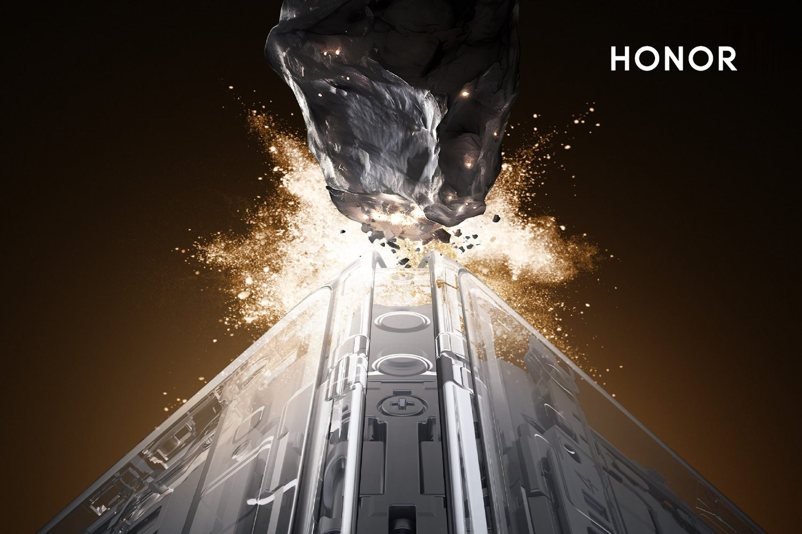

Still I Rise
A triptych typography poster inspired by Maya Angelou’s “Still I Rise” — words that grow like vines to show how type can carry a voice.
- Deliverables
- Poster, animation, type treatment
- Tools
- InDesign, Illustrator, print
Overview
The poster series draws on the imagery of growing vines — swirling type that forms a word — to evoke the poem’s themes of resilience, empowerment and hope.
Two hands at the sides symbolize pushing against adversity: when one falls, these hands press against the ground, or a wall, to rise again. The imagery underscores the inner strength that lets us rise “like air.”

The printed triptych
Printed and hung as three panels — BUT STILL, LIKE AIR, I’LL RISE — with hand-cut wooden title boards beside them.



Next project
HONOR Magic V5 Launch
Launch key visuals and short-form films for a global foldable
